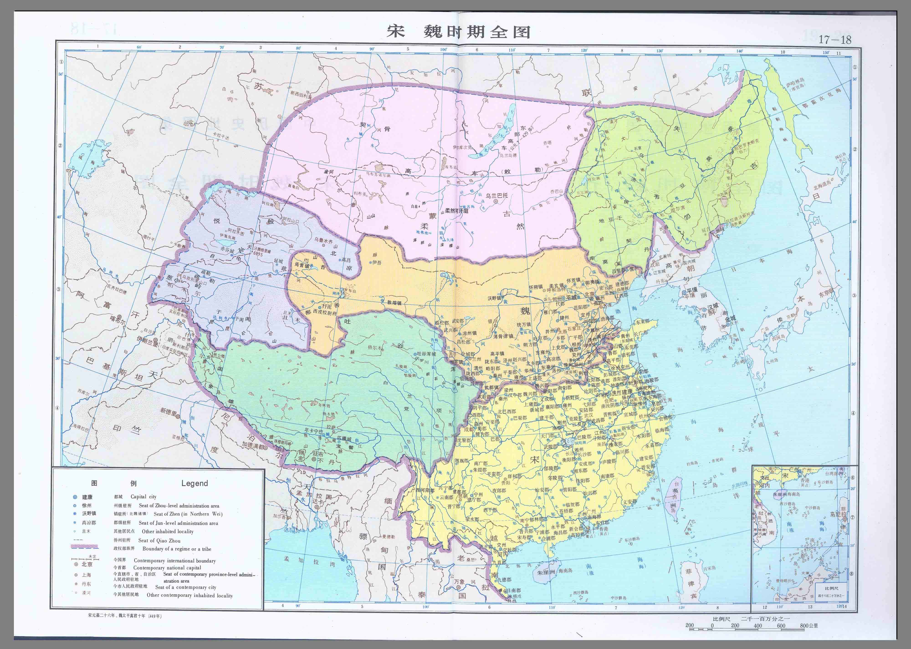

政权综述 · 中文 / English 独立切换 中文 English
十六国南北朝综述(304—589,文字示意)
> 本文件 period_id 用 northern-southern,正文分"十六国/南朝/北朝"三节,符合"综述用 northern-southern但正文分南北两节"要求。疆域只作文字示意。
南北两节
北:十六国混战→北魏统一→东西分裂→北齐北周
304年刘渊建汉(前赵)、李雄建成都(成汉),十六国局面开;439年北魏太武帝统一北方;534年分东西魏,550北齐、557北周代立;577北周灭齐。
南:东晋→刘宋齐梁陈
420年刘裕代晋建宋,其后齐(479)、梁(502)、陈(557)递代,都建康;侯景之乱(548—552)重创南朝;589年隋灭陈,南北统一。
孝文改革
北魏孝文帝(471—499在位)迁都洛阳、改汉姓、断胡服等汉化改革,为北朝制度关键转折,详见 official 条。
Mermaid 示意
graph LR
JinW[西晋] --> S16[十六国混战 304-439]
S16 --> NWei[北魏 386-534: 道武→太武统一→孝文改革→分裂]
NWei --> EW[东魏/西魏 534-]
EW --> QZ[北齐/北周 550/557-577/581]
JinE[东晋] --> Song[刘宋 420-479]
Song --> Qi[齐 479-502]
Qi --> Liang[梁 502-557]
Liang --> Chen[陈 557-589]
QZ -. 589隋统一 .-> Sui[隋]
Chen -. 589隋灭陈 .-> Sui
地理文字示意(非精确)
北方:黄河流域为核心,平城/洛阳/邺/长安为都城转移点。
南方:长江下游建康为中心,江淮为南北拉锯带。
十六国政权此兴彼灭,不逐一划界。
来源
房玄龄等《晋书·载记》;魏收《魏书》;沈约《宋书》;萧子显《南齐书》;姚思廉《梁书》《陈书》;李百药《北齐书》;令狐德棻等《周书》;司马光《资治通鉴》。传世本,具体版本待考,页码待核,未能联网核验。
Sixteen Kingdoms and Northern–Southern Dynasties Overview (304–589)
This period spans the Sixteen Kingdoms warfare and the division between northern and southern courts. In 304 Liu Yuan 刘渊 founded Han (Former Zhao) and Li Xiong 李雄 founded Cheng-Han, opening the Sixteen Kingdoms era of rapidly rising and falling regimes. In 439 Emperor Taiwu of Northern Wei 北魏太武帝 reunified the north; the Wei later split into Eastern and Western branches in 534, succeeded by Northern Qi (550) and Northern Zhou (557), with Zhou destroying Qi in 577.
In the south, Liu Yu replaced Eastern Jin with Song in 420; Qi (479), Liang (502), and Chen (557) followed in succession at Jiankang. The Hou Jing Rebellion 侯景之乱 (548–552) devastated the southern courts. In 589 Sui destroyed Chen and reunified north and south.
A key institutional turning point was the reform of Emperor Xiaowen 孝文帝 (reigned 471–499), who moved the capital to Luoyang, adopted Han surnames, and restricted steppe dress. Northern centers shifted among Pingcheng, Luoyang, Ye, and Chang'an, while the south centered on Jiankang with the Huai valley as a contested zone; no precise boundaries are asserted here.
Detailed treatment of the southern courts from Song through Chen and of individual northern regimes appears in the official entries, with Hou Jing's rebellion and the Jiankang courts given separate attention. Sources pending page verification, no internet verification.
皇帝传承思维导图 mindmap
root((南北朝·君主世系))
刘宋2位
刘裕
高祖/武帝｜刘宋 ’420-422’
刘义隆
太祖/文帝｜刘宋 ’424-453’
南齐1位
萧道成
太祖/高帝｜南齐 ’479-482’
南梁1位
萧衍
高祖/武帝｜南梁 ’502-549’
南陈1位
陈霸先
高祖/武帝｜南陈 ’557-559’
北魏3位
拓跋珪
太祖/道武帝｜北魏 ’386-409
拓跋焘
世祖/太武帝｜北魏 ’423-452
拓跋宏
高祖/孝文帝｜北魏 ’471-499
北齐1位
高洋
显祖/文宣帝｜北齐 ’550-559
北周1位
宇文邕
高祖/武帝｜北周 ’560-578’
前赵/汉赵1位
刘渊（代表）
前赵/汉赵 ’304-310’
前秦1位
苻坚（代表）
前秦 ’357-385’
帝系表明细(emperors.yaml) # 南朝宋齐梁陈 + 北朝代表 + 十六国仅列代表(生卒存疑)
- {name: 刘裕, temple: 高祖/武帝, polity: 刘宋, period_id: northern-southern, reign: "420-422", birth_death: "约363—422,存疑", confidence: high}
- {name: 刘义隆, temple: 太祖/文帝, polity: 刘宋, period_id: northern-southern, reign: "424-453", birth_death: "约407—453,存疑", confidence: high}
- {name: 萧道成, temple: 太祖/高帝, polity: 南齐, period_id: northern-southern, reign: "479-482", birth_death: "约427—482,存疑", confidence: medium}
- {name: 萧衍, temple: 高祖/武帝, polity: 南梁, period_id: northern-southern, reign: "502-549", birth_death: "约464—549,存疑", confidence: high}
- {name: 陈霸先, temple: 高祖/武帝, polity: 南陈, period_id: northern-southern, reign: "557-559", birth_death: "约503—559,存疑", confidence: medium}
- {name: 拓跋珪, temple: 太祖/道武帝, polity: 北魏, period_id: northern-southern, reign: "386-409", birth_death: "约371—409,存疑", confidence: high}
- {name: 拓跋焘, temple: 世祖/太武帝, polity: 北魏, period_id: northern-southern, reign: "423-452", birth_death: "约408—452,存疑", confidence: high}
- {name: 拓跋宏, temple: 高祖/孝文帝, polity: 北魏, period_id: northern-southern, reign: "471-499", birth_death: "约467—499,存疑", confidence: high}
- {name: 高洋, temple: 显祖/文宣帝, polity: 北齐, period_id: northern-southern, reign: "550-559", birth_death: "约529—559,存疑", confidence: medium}
- {name: 宇文邕, temple: 高祖/武帝, polity: 北周, period_id: northern-southern, reign: "560-578", birth_death: "约543—578,存疑", confidence: medium}
- {name: 刘渊(代表), polity: 前赵/汉赵, period_id: sixteen-kingdoms, reign: "304-310", birth_death: "约251—310,存疑", confidence: medium, note: 十六国仅列代表}
- {name: 苻坚(代表), polity: 前秦, period_id: sixteen-kingdoms, reign: "357-385", birth_death: "约338—385,存疑", confidence: high, note: 淝水之战}
实际掌权人思维导图 mindmap
root((南北朝·名义君主与实际掌权者))
权臣与实力人物（6人）
刘裕
权臣/开国君主
��文帝改革集团（冯��后/孝文帝）
改革
尔朱荣
权臣
高欢
权臣
宇文泰
权臣/府兵
侯景
叛将
掌权表明细(power-holders.yaml) - {name: 刘裕, polity: 东晋→刘宋, period_id: northern-southern, role: 权臣/开国君主, dates: "约363—422,存疑", confidence: high, source: "沈约《宋书·武帝纪》,传世本待考", note: 北伐灭南燕后秦,420代晋}
- {name: ��文帝改革集团(冯��后/孝文帝), polity: 北魏, period_id: northern-southern, role: 改革, dates: "约467—499,存疑", confidence: high, source: "魏收《魏书·高祖纪》,传世本待考", note: 迁都改制}
- {name: 尔朱荣, polity: 北魏末, period_id: northern-southern, role: 权臣, dates: "约493—530,存疑", confidence: medium, source: "魏收《魏书》;《北史》,传世本待考", note: 河阴之变,北魏分裂前因}
- {name: 高欢, polity: 东魏/北齐奠基, period_id: northern-southern, role: 权臣, dates: "约496—547,存疑", confidence: medium, source: "李百药《北齐书·神武纪》,传世本待考", note: 与宇文泰对峙}
- {name: 宇文泰, polity: 西魏/北周奠基, period_id: northern-southern, role: 权臣/府兵, dates: "约507—556,存疑", confidence: medium, source: "令狐德棻等《周书·文帝纪》,传世本待考", note: 府兵制奠基}
- {name: 侯景, polity: 梁末, period_id: northern-southern, role: 叛将, dates: "约503—552,存疑", confidence: medium, source: "姚思廉《梁书》;《南史》,传世本待考", note: 侯景之乱}
独立时间线思维导图(本朝代隔离展示) mindmap
root((南北朝·大事分期))
十六国（仅列代表）
刘渊建汉/R李雄建成都,十六国开端
304
淝水之战
383
northern-southern
北魏建国（拓跋珪）
386
刘裕代晋建宋
420
北魏统一北方
439
孝文帝即位/改革启动
471
迁都洛阳
494
北魏分裂东西魏
534
侯景之乱起
548
北周灭北齐
577
隋灭陈,南北统一
589
时间线明细(timeline.yaml) - {date: 304, event: 刘渊建汉/R李雄建成都,十六国开端, period_id: sixteen-kingdoms, confidence: medium, source: "《晋书·载记》,传世本待考"}
- {date: 383, event: 淝水之战, period_id: sixteen-kingdoms, confidence: high, source: "《晋书·苻坚载记》《谢安传》;《资治通鉴》"}
- {date: 386, event: 北魏建国(拓跋珪), period_id: northern-southern, confidence: high, source: "魏收《魏书·太祖纪》"}
- {date: 420, event: 刘裕代晋建宋, period_id: northern-southern, confidence: high, source: "沈约《宋书·武帝纪》"}
- {date: 439, event: 北魏统一北方, period_id: northern-southern, confidence: high, source: "魏收《魏书·太武帝纪》"}
- {date: 471, event: 孝文帝即位/改革启动, period_id: northern-southern, confidence: high, source: "魏收《魏书·高祖纪》"}
- {date: 494, event: 迁都洛阳, period_id: northern-southern, confidence: high, source: "魏收《魏书·高祖纪》"}
- {date: 534, event: 北魏分裂东西魏, period_id: northern-southern, confidence: high, source: "《魏书》《北齐书》《周书》"}
- {date: 548, event: 侯景之乱起, period_id: northern-southern, confidence: high, source: "姚思廉《梁书》;《资治通鉴·梁纪》"}
- {date: 577, event: 北周灭北齐, period_id: northern-southern, confidence: high, source: "令狐德棻等《周书》;李百药《北齐书》"}
- {date: 589, event: 隋灭陈,南北统一, period_id: northern-southern, confidence: high, source: "姚思廉《陈书》;《隋书》"}
疆域图(真实地图图片) nanbeichao-chenqizhou.jpg 
nanbeichao-songwei-quantu.jpg 地图图片来源：gitcode.com/open-source-toolkit/2fba6 （用户提供下载地址；原包未声明制图者/原书/许可，仅本地展示，勿再分发）
疆域图来源与许可(meta.yaml) period_id: northern-southern
maps:
- {file: territory.svg, coverage: 南北朝对峙(420-589), claim: 自绘多边形示意,非精确疆界,不作比例与海岸线依据, drawn: 自绘示意, license: CC0, dispute: 南北分界犬牙交错,此图不裁决争议, modern_boundary: 禁套现代国界省界}
- {file: northern-southern-sketch.svg, coverage: 旧版方位示意, claim: 旧版兼容保留, drawn: 文字示意, license: CC0, dispute: 不作精确声称, modern_boundary: 禁套现代国界省界}
method: 自绘示意多边形图,黄河长江走向示意,不作精确测绘
license: CC0
dispute: 边界数字史料不一,不作精确声称;不套用现代行政边界
note: 需与dynasty.md疆域文字描述配合使用;孝文迁洛箭头仅示意方向
real_maps:
- file: maps/nanbeichao-chenqizhou.jpg
origin: https://gitcode.com/open-source-toolkit/2fba6（用户提供下载地址，包内为zip全图/分省图扫描页）
license: 原包未声明（制图者/原书/许可待考；仅本地展示，勿再分发）
- file: maps/nanbeichao-songwei-quantu.jpg
origin: https://gitcode.com/open-source-toolkit/2fba6（用户提供下载地址，包内为zip全图/分省图扫描页）
license: 原包未声明（制图者/原书/许可待考；仅本地展示，勿再分发）
note_real: 本组疆域图已替换为真实地图图片（jpg），页面优先展示real_maps；territory.svg仅保留兼容/五代等缺包组使用
map_source_url: https://gitcode.com/open-source-toolkit/2fba6（用户提供下载地址；原包未声明制图者/原书/许可，仅本地展示勿再分发）
史料条目(官 3 / 民 1) 全局时间线(分组聚合) · 首页 · 搜索
历史全集静态站 · 零依赖构建 · 史料均注来源版本定位，未核验处标“页码待核/未能联网核验”；演绎与史料严格区分；疆域图为自绘示意非精确测绘，禁套现代边界；官方图待用户提供后替换。